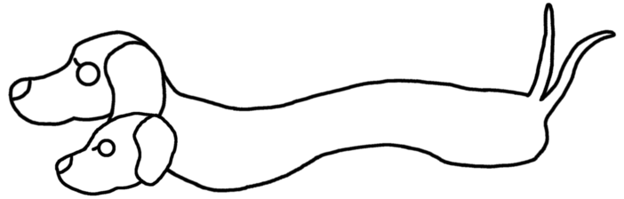

aiya000の共有メモ帳
- 2021/02/07 - 【Nuxt.js】storeでないモジュールを`@/store/`配下に置いてはいけない（Nuxt.js, TypeScript, JavaScript）
- 2021/02/01 - 【せつラボ裏話】せつラボは実は、実在する彼女たちに基づいた話なんです【2/12セール情報】（頒布物）
- 2021/01/09 - Google Cloud Functionsでnode.jsを使う場合、devDependenciesを使うとデプロイが失敗する（node.js, GCP）
- 2020/12/30 - アバター改変で服などを着せるするなら、絶対にボーン名を変更しておいた方がいい（VRChat, Unity）
- 2020/12/28 - アバターのHierarchyにカメラを設定していたら、Build & Publishを押してもアバターアップロード画面が出なくなった（VRChat, Unity）
- 2020/12/25 - brewで環境を更新したらVimでinsertモードに入ったときに固まるようになったので修正した（Vim）
- 2020/12/25 - gitでまだpushしていないファイルを検出する（git）
- 2020/12/09 - 【Avatar3.0】初心者におすすめのアバター改変【段階別】（VRChat, Unity）
- 2020/11/23 - SCP-1000-■■（■■）
- 2020/09/13 - Udon#でUdonSyncedを使わない方法（VRChat, Udon#）
- 2020/09/10 - Spring Tool Suite 4でorg.eclipse.buildship.core.prefsのせいでJAVA_HOMEが設定できなかった（Java）
- 2020/09/04 - 【VRChat・メモ】ちゃんとコライダーを設定してるのにオブジェクトが床の下に落ちてしまうときの修正方法（VRChat, Unity）
- 2020/09/01 - エクスポートしたいprefabと、その最小限の依存関係のみを持ったunitypackageを作成する（Unity）
- 2020/08/16 - 【VRChat API】favorite済みワールド全てをunfavoriteする（VRChat）
- 2020/08/11 - VRChatのアバターをローカルで簡易テストする（VRChat, Unity）
- 2020/08/11 - VRChatのアバターを新しいアバターとしてアップロードする（VRChat, Unity）
- 2020/08/02 - WIP【Blender未使用】UnityでVRChatアバターの素体（胴体）を入れ替える方法（VRChat, Unity）
- 2020/06/10 - 【Vimにコントリビュート】garray_Tの使い方（Vim, C）
- 2020/05/23 - WindowsでWifiデバイスの設定をいじったら速くなった（Windows）
- 2020/05/23 - WSL2が仮想化支援機能（Intel-VT）を専有していたため、VMWare Playerで64bit OSがインストールできなかった（Windows, Linux, WSL）
- 2020/05/03 - XMonad上のGVimで画面にゴミが出る場合は'renderoptions'（Vim）
- 2020/03/19 - Vimのtablineに、vim-lspのrunningなserversを表示する（Vim）
- 2020/02/24 - Vimをvalgrind付きでビルドして、メモリリークを検出する（Vim, C）
- 2020/02/21 - Firebase AuthenticationユーザーのdisplayNameは、Firestore rules上ではnameとして定義される（Firebase, TypeScript, JavaScript）
- 2019/12/14 - 技書博２（技術書同人誌博覧会２）にサークル参加してきました！（備考録）
- 2019/12/04 - Haskell Day 2019でスタッフ＆30分登壇をしてきました！（備考録, 圏論）
- 2019/12/02 - VimConf2019でスタッフ＆LTをしました（備考録）
- 2019/10/26 - systemd-networkdを使うときはdhcpcdを切る（Linux）
- 2019/09/23 - 技術書典7で数学入門書（圏論）を頒布してきました！（計上報告等）（イベント, 備考録）
- 2019/09/01 - 【サンプルpdfあり】技術書典7にて圏論入門小説を頒布します！【え20C】（イベント, 圏論, Haskell, 集合論）
AWS AdventCalendar AdventCalendar2017 Android C Firebase GCP Haskell Idris Java JavaScript Kotlin Linux Linux プログラミング Lisp NeoVim Node.js Nuxt.js RasberryPi Scala Shell TypeScript Udon# Unity VRChat Vim WSL Windows elm git node.js shell ■■ ことり、穂乃果と一緒に学ぶHaskell にこ、希と一緒に学ぶHaskell イベント ゲーム プログラミング ラブライブ！で学ぶ 健康 備考録 圏論 日記 環境 集合論 頒布物